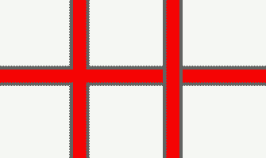

|
MapLink Pro Studio 11.1
|
|
MapLink Pro Studio 11.1
|
There are 3 levels of ordering that occur within a detail Layer
Within each detail Layer produced, there are 3 sub-layers. All Polyline and Polygon primitives are placed in the bottom sub-layer. All Point primitives are placed in the middle sub-layer, and all Text primitives are placed in the top sub-layer.

This ensures that a sensible map will be produced, where Polygons and Polylines will never overdraw Text and Point primitives.
Within each sub-layer, primitives are grouped together by file. The order of the files within the Layer in the project tree defines the drawing order of the file groups within the sub-layer.
The Default Feature Mask Mode is set on the Options Map Creation page.
Within each file, primitives are grouped together by Feature Class. The order of Feature Classes within the file group is determined by the order of the Feature Classes in the Feature Tree.
his diagram shows the hierarchy implicit in a geometry model representing a detail layer.

 To ensure that file A is drawn before file B
To ensure that file A is drawn before file B
To ensure that Feature Class A is drawn before Feature Class B when A and B are found in the same file
In addition to the standard feature ordering techniques, MapLink Pro 4.5 introduces the concept of Render Levels to assist with the creation of complex topographic features such as intersections, bridges and junctions.
Within the Polyline and Polygon sub-layer, the user can use the Render Level to influence the Feature Ordering. On occasion it may be important to differentiate between primitives within a detail layer, e.g. between two polylines, forming a bridge crossing. To ensure that MapLink Pro gets the correct order the Render Level can be set for individual primitives in the range -5 to +5 with the default 0. The higher the figure applied the higher the ‘priority’ and MapLink Pro will draw that primitive on top of primitives with a lower Render Level.
When Features are at the same Render Level, MapLink Pro blends the edges of the complex line styles so that for example, the dark edges of roads meet correctly at a T-junction. When Features are at different Render Levels, MapLink Pro keeps the complex line styles separate so that for example, the dark edges of roads are drawn distinctly for bridges.

In the above example three lines are present - the horizontal and the vertical on the left have the same render level, while the vertical to the right has a higher render level. A more complex junction such as that shown below, can easily be created.
When a map is created, MapLink Pro Studio performs further analysis of the Features at differing Render Levels to ensure that they blend correctly in situations such as slip-roads. Because of this additional processing, we recommend that Render Levels are not used for general purpose feature ordering, but only used when required for complex topography. This post-processing also means that the output visualisation may not exactly match that inside MapLink Pro Studio. The output visualisation will generally be smoother and more pleasing to the eye.
Note: The Render Level is stored on individual Features, not as a property of the Feature Class as a whole. This means that changes to the Render Level will not be visible until the data is reloaded. Also Render Level is not applicable in the point and